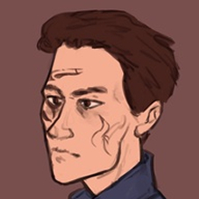
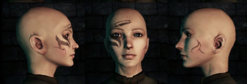
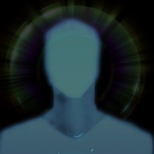

Profile is w.i.p. and the information is subject to change!
Content warnings [click to view]
- Canon-typical war, violence and death topics
- Xenophobia and oppression of various flavours, also canon-typical though :)
- Orphan character
- Mental illness, depression specifically
- Character death, (implied, de facto) suicide
/ last upd. 5 nov 2026
«There are twenty years to go, a golden age, I know,
But all will pass, and end too fast, you know»
Placebo — Twenty Years

| Name | Tillen
(spelled as [ˈtaɪlən]) |
|---|---|
| AKA | Tillen Amell, Till (with soft L, like [tilʲ]), Ty [taɪ]
The (Grey) Warden, The Hero of Ferelden |
| Gender | Sexuality | Male | Homosexual |
| Age | Early 20s, I think he was 22 y.o. when he died |
| Race | Human |
| Ethnicity | Anderfelian-Fereldenian |
| Class | Mage, Ice mage mostly with later Blood Mage specialization |
| Occupation | Well. The Hero of Ferelden? |
| Setting | Dragon Age Origins |
| Role | Protagonist |
About
+ Sharp-witted, charismatic, confident, dedicated, principled +
= Erratic, restless, upfront, risky, idealistic, free-spirited, intense, daring =
- Stubborn, vindictive, judgemental, irritable, impatient, quarrelsome, selfish -
A restless young man, who wanted to become a legend so bad.
Basically my quite dusty and Extremely dramatic Warden. I would write him an appropriate 'about' section, hopefully soon, but for now it is what it is
Design notes
- Build notes: 190 cm | 6' 3'', both gangly and scrawny.
- Has a very pale skin tone.
- Facial features: Oval-shaped yet very 'slim' face, thin long nose, average (and often frowned) eyebrows, dark brown eyes with prominent eyebags. I'd say the closest irl person to him I have on my mind is a young Alain Delon (not ctrl c-ctrl v case, but yeah).
- Tattoo This one default facial tattoo, lmao. A complete freestyle by Mars, but he
likes
that the left-sided markings look like a bird :з

- Scars: Nothing specified, although he obviously has them. Feel free to draw him with random scars/scratches on his body.
- Hair: Thick straight dark brown hair, combed back neatly. He puts in too many effort for his haircut to look flawless.
- Clothing style:
- I think my favorite option is some variation of grey warden mage robe (say something like grey warden!Bethany Hawke has), but generally any mage robe or overall any medieval-passing clothing until its like an actual armor.
- He very obviously has a preference for blue shades. He also likes ✨dressing✨ fancy and looking great, so of course he enjoys pretty embroidery, and also enjoys capes and standing collars.
- Impression / Common mannerisms: Cold, pretentious and smug, I think? He appears to be a very self-confident and bold (brash even) person. He fixes his hair very often, especially as a self-soothing gesture (so yeah he absolutely will still do it whe covered in blood/mud and on a verge of a mental breakdown).
- Weapon notes: He uses a stave of a completely random design. I don't think he gets attached to them and replaces them very easily.
- Feel free to draw him with body hair and generally not-perfect skin if it fits your artstyle!
- There's no need to colorpick from his references, just try to keep the approximate colors/shades ratio recognizable and you cool.
Likes
- He's quite fond of cats.
- Aurafarming and looking cool 😎
- Flowers. Plants and trees in general, I think, but the flowers are especially pretty.
- Folklore, stories and legends.
- Journaling (THE WHINER)
- Birds
Dislikes
- Dogs, canines in general. He's Very Open about not being a fan of mabaris.
- Anything associated with the church, templars and their support. He had an obvious bird in a cage trauma and definitely experience violence from several tower templars for being a Very inconvenient young mage to deal with and he's overall very passionate about his ideals and maximalistic, so of course his vision of the mages and templars situation is very black-and-white.
- Being ill, although his immunity, well. Isn't very great, I would say.
- Darkness. And confined spaces.
Connections

Karr
best friend
The rebellious dalish annoyed him immensely when they first met. Admittedly because she felt like his own twisted reflection which he didn't particularly enjoy. They bonded with time, though, to the point by the end of the plot she was probably his closest person ever. He appreciated that she never tried to 'influence' him and respected his choices, even if it was obvious how she personally felt about some of them. I think he saw her as his troublesome but cool elder sister.
TBN
friend, partner?
He was a good person. Tillen cared about him deeply, but nether bothered to be particularly honest with him, especially about his further life plans. About not having any, specifically. It must have really broken his heart when on their last meeting before the Archdemon final battle his troubling bittersweet speech was hardly to interpret other than 'You're probably the best person I ever met but we're breaking up rn, hope you'll find someone who deserves your love, good luck <з', and of course [TBN] lacked the context only Karr and Morrigan were aware of. And this conversation was the last time anyone saw Tiller alive.
Mars
friend
Marcia was his fellow tower mage, senior to him both in age and her status. She also was the one to get his a facial tattoo, but they barely interacted much otherwise, and even if they did, Mars' apathetic 'it is what it is' attitude would probably clash with Till's burning rebellion. It was a weird and messy coincidence both of them were dragged into the Jowan drama, and both were questionably rescued via being recruited as potential grey wardens. Something Marcia was very vocally Not happy about. Which, expectably, made their relationships rather tensed and hostile at first, but they learnt to work together and appreciate each other as an ally. They generally got along much better with time and actually became friends. Tillen really appreciated her magic-related skills and knowledge, obviously more refined and thorough than his own.
Feel free to draw him interacting with your characters if you want!
Trivia
- Motifs/associations for him are ice, color blue, jackdaws, statues. The sense of distance and alienation, and also longing. Urge to burn bright and to show-them-all (to do things just in spite). Also the bird in the cage and any other such tower and feeling like a prisoner kind of symbolism. Mother love, except he doesn't remember his mother so it's just a warm idolized image in his head. Forge-me-nots, maybe?
- Inspiration [kinlist]:
-
Enjolras, Les MisérablesAndrey Stamatin, Pathologic 2Alexander Hamilton, Hamilton the MusicalElsa Frozen
- I'd say he was vaguely influenced by Bo Burnham and (sigh) Morrissey, both their music and some parts of their public image/character.
- Tillen was created in 2017, during my not historically first dao playthrough, but the first one when I was Serious about the game, and the first one where my character actually mattered to me.
- His name originally was Tilen, which was basically a Daylen aka the default Amell name with its first letter changed (in russian adaption of the game though. Like, Дайлен-Тайлен, and I didn't check how the name looked on English until now hfjghhf), then me and my friend who we back then shipped our dao protagonists with, were thinking about modern au where I adapted his name to Tyler, so his dao version named was transformed into Tylen, to make at least any parallel in addition to just same first letter of the name. I wasn't fully content about the whole Tilen and Tylen name since the Tyler au became a thing, so basically ..Well, today (4 nov 2026), he existed as Tyler in all verses including dao, which still felt somewhat off either. Then something randomly clicked in my head and I've came up with Tillen (and Till, which is from this point on Tyler's modern version name he later officially changed, which made So Much more sense as he was already (half) german) :]
- He was originally supposed to be that tragically dead Hero of Ferelden character, because I back then felt extremely uncomfortable about the whole Morrigan ritual child plotline (im chill about it now though) And I was an angsty teen so I was obsessed with the concept of main character dying in the end. So, a very meta reasons for this decision. Then the mentioned earlier ship with friend's Surana happened, and he really liked Tillen as a character, so I've canceled his final death so our ocs would have a happy ever after (well, as happy as the grey wardens could be) and Till got his 'dying is easy, young man, living is harder' kind of character development. Our characters plotlines are no longer connected anyhow, though, so I'm back to the original concept, with only exception it does have an actual watsonian perspective reason, Finally.
- Also back then he used to have the Shapeshifter mage specialization and could turn into a wolf as a nod to his (errr admittedly from my current perspective super flanderizing) modern version admiration for wolves and anything wolf-related. Which doesn't make much sense to me anymore, so I've retconned that part.
Sidebar image credits to Disco Elysium (2019)